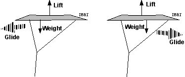

Just remember that "to steal"= (in french) "voler"="to fly" !...
and "WHY C we C that drank ?" means "But WHY do we do that ?" ???
Other pages below have been translated by me, perhaps not better but I warrant...
Article published in french in LUCANE n° 104 (sept 2004). Translated feb 2005.
All reasons we assert to fly kites.... The one and only true reason...

The Elastic BridleArticle published in french in LUCANE n° 106 (jan 2004).
How to prevent your kite from flying over your head.
Balance influence. Effect of an elastic bridle and How to implement.
 God gracious, my kite !
God gracious, my kite ! What to do and not to do if your kite or your line is cut, hooked, blocked, gone with the wind...
 The Albatross
The AlbatrossArticle published in LUCANE and NCB n°109 (oct 2001).
Construction drawings and explanations.
In a Post-Scriptum : Modifications brought since publication.